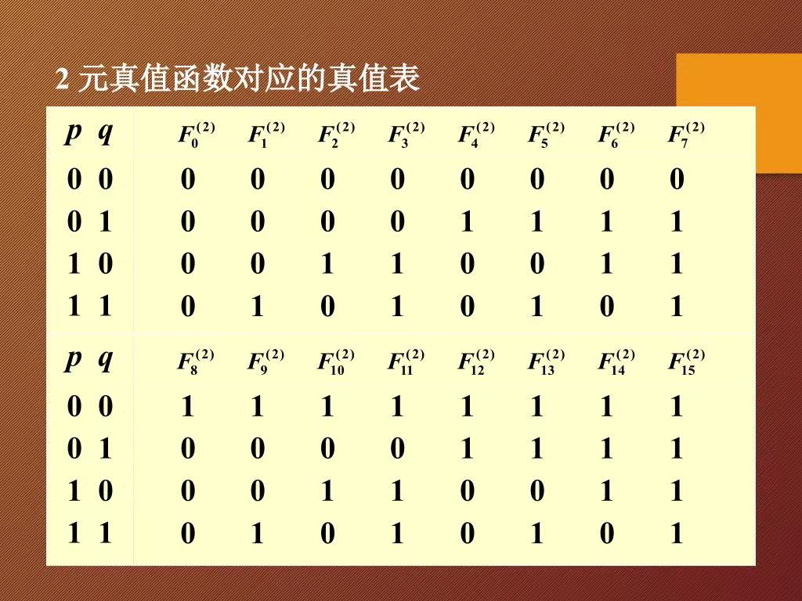
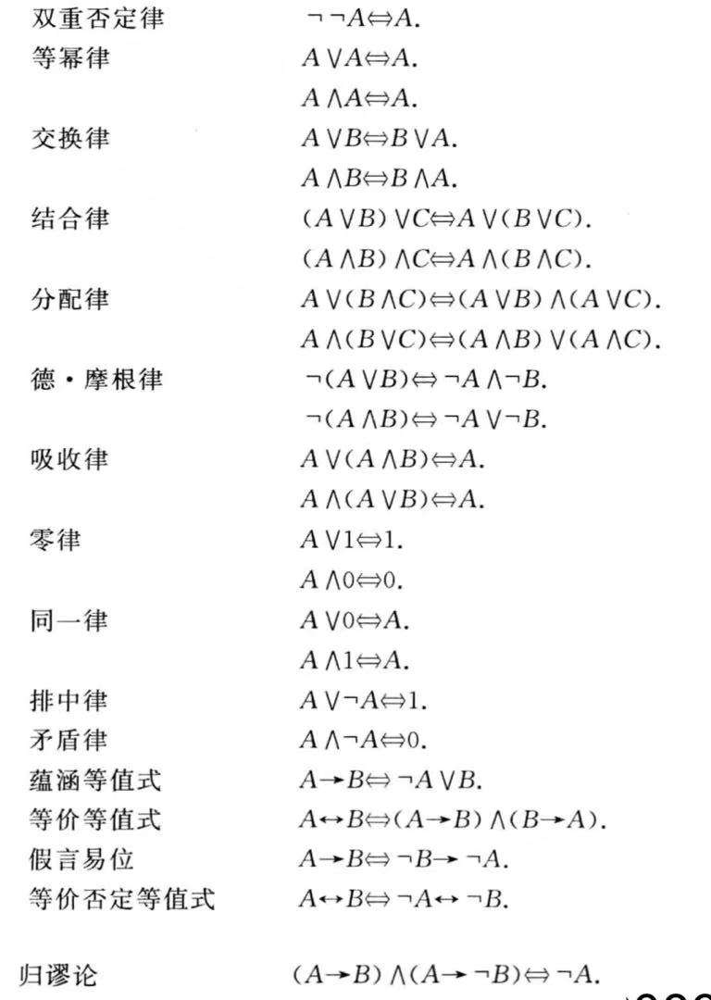
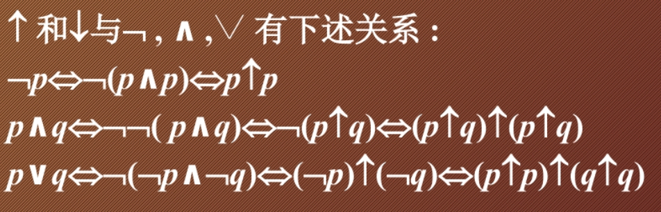
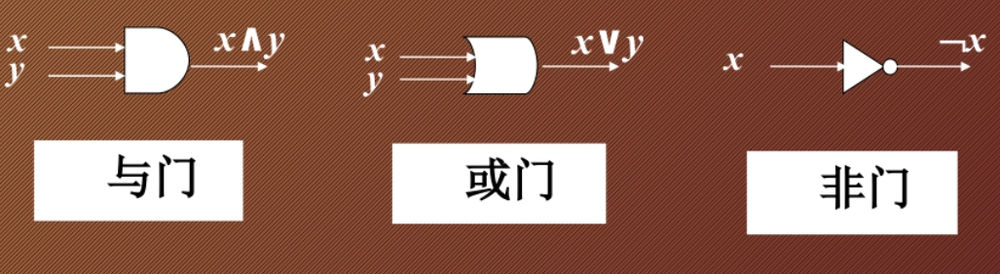
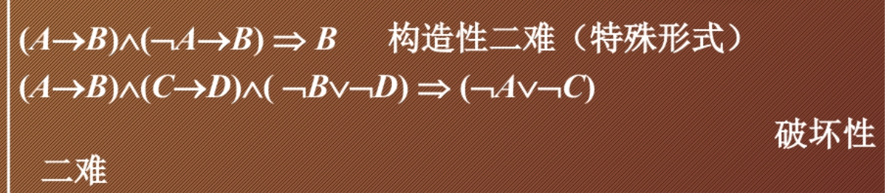
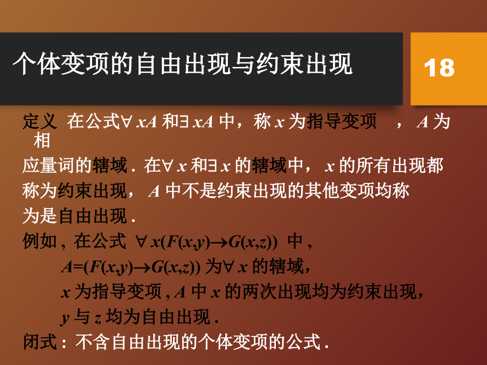
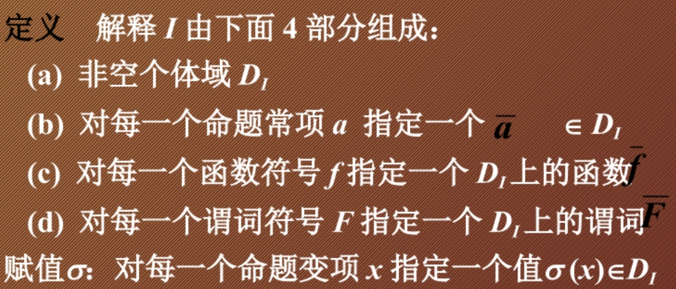
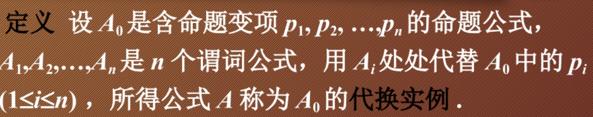

离散数学
从入门到出门。
第一章 命题逻辑¶
\(\S 1.1\) 命题符号化及联结词¶
-
命题：能判断真假的陈述句。表示其正确性的值称为真值。
-
不能分解的更简单的命题称为简单命题或原子命题。
-
简单命题真值确定，又称为命题常项或命题常元。
-
真值可变的简单陈述句称为命题变项或命题变元。
-
复合命题由简单命题与联接词联接而成。联结词也称为真值联结词或逻辑联结词。
-
复合命题 “非 \(p\)” 称为 \(p\) 的否定式，记作 \(\neg p\)。\(\neg\) 称为否定联结词。
-
复合命题 “\(p\) 并且 \(q\)” 称为 \(p\) 与 \(q\) 的合取式，记作 \(p \wedge q\)。\(\wedge\) 称为合取联结词。
-
复合命题 “\(p\) 或 \(q\)” 称为 \(p\) 与 \(q\) 的析取式，记作 \(p \vee q\)。\(\vee\) 称为析取联结词。
-
复合命题 “如果 \(p\)，则 \(q\)” 称为 \(p\) 与 \(q\) 的蕴涵式，记作 \(p \to q\)。称 \(p\) 为蕴涵式的前件，\(q\) 为蕴涵式的后件。\(\to\) 称为蕴涵联结词。该命题为假当且仅当 \(p\) 为真且 \(q\)为假。
\(q\) 是 \(p\) 的必要条件，\(p\) 是 \(q\) 的充分条件。等同于"只要 \(p\) 就 \(q\)"，“\(p\) 仅当 \(q\)”，“只有 \(q\) 才 \(p\)”等。
若两个命题均是否定行为，可以考虑先化作逆否命题形式。
还有一种较为直观判断 \(p \to q\) 还是 \(q \to p\) 的方法是画维恩图。后件的区域是会包含前件的区域的。

-
复合命题 “\(p\) 当且仅当 \(q\)” 称为 \(p\) 与 \(q\) 的等价式，记作 \(p \leftrightarrow q\)。\(\leftrightarrow\) 称为等价联结词。该命题为真当且仅当 \(p\) 和 \(q\) 均为真或均为假。
\(\S 1.2\) 命题公式及分类¶
-
命题公式定义：
- 单个命题常项 / 变项 / 0 / 1 是命题公式。
- 有限次的联结词与命题公式结合使用也是命题公式。
- 命题公式又称为合式公式，简称公式。
-
命题公式层次的定义：
- 单个命题是 \(0\) 层公式。
- \(A\) 是 \(n + 1\) 层当且仅当：
- \(A = \neg B\)， \(B\) 是第 \(n\) 层。
- \(A = B \oplus C\)，其中 \(B\)，\(C\) 是第 \(i\) ，\(j\) 层，且 \(n = max(i, j),\oplus =\vee / \wedge / \to / \leftrightarrow\)。
-
对于某一命题公式 \(A\)，对于其中的命题变项，指定它们的一组真值，称为 \(A\) 的一个赋值 / 解释。使 \(A\) 真值为真的这组值称为成真赋值，反之称为成假赋值。
-
特殊的，若 \(A\) 在所有赋值下均为真，则称为重言式或永真式；若 \(A\) 在所有赋值下均为假，则称为矛盾式或永假式；若 \(A\) 在某一赋值下为真，则称为可满足式。
-
\(n\) 元真值函数 \(F:\{0, 1\}^n \to \{0, 1\}\)，对于 \(n\) 个命题变项有 \(2^{2^n}\) 个真值函数 。
因为 \(n\) 个变量可以形成 \(2^n\) 个结果，对于每个结果，又有 \(0 / 1\) 的选择，故一共 \(2^{2^n}\)。

对于 \(A\)，\(B\) 命题，若 \(A \leftrightarrow B\) 是重言式，则称 \(A\)，\(B\) 等价，记作\(A \Leftrightarrow B\)。
注意 \(\Leftrightarrow\) 不是联接词。
\(\S 1.3\) 命题逻辑等值演算¶
-
等值演算：由已知的等值式推演出新的等值式；置换规则：若 \(A \Leftrightarrow B\)，则 \(\Phi(A) \Leftrightarrow \Phi(B)\)。
证明两个公式等值时，可以直接用等值演算来验证，而证明公式不等值时，往往要通过赋值来使两边真值不等来验证。

\(\S 1.4\) 范式¶
-
仅由有限个命题变项或其否定构成的析取式称为简单析取式，仅由有限个命题变项或其否定构成的合取式称为简单合取式。
-
由有限个简单析取式合取而成的式子称为合取范式，由有限个简单合取式析取而成的式子称为析取范式。析取范式和合取范式总称为范式。
单个命题变项或其否定既是简单析取式又是简单合取式。
-
任一命题公式都有与之等值的析取范式和合取范式，且不唯一存在。
-
极小项：在含有若干命题变项的简单合取式中，每个命题变项及其否定有且仅有一个出现一次，这样的简单合取式称为极小项。 极大项：在含有若干命题变项的简单析取式中，每个命题变项及其否定有且仅有一个出现一次，这样的简单析取式称为极小项。
\(n\) 个命题变项产生 \(2^n\) 个极小（大）项。
用 \(m_i(M_i)\) 表示第 \(i\) 个极小（大）项，\(i\) 是该极小（大）项成真（假）赋值的十进制表示。
\(\neg m_I \Leftrightarrow M_i\)，\(\neg M_i \Leftrightarrow m_i\)。
-
主析取范式：由极小项组成的析取范式，主合取范式：由极大项合取组成的合取范式。
-
任何命题公式都有与之等值的主析取范式和主合取范式，并且是唯一的。
-
利用公式的主析（合）取范式可以快速成真（假）赋值。
-
判断公式类型（重要推论）： 设 \(A\) 有 \(n\) 个命题变项，则
-
\(A\) 为重言式 \(\Leftrightarrow\) \(A\) 的主析取范式含 \(2^n\) 个极小项。
\(\Leftrightarrow\) \(A\) 的主合取范式为 \(1\)。
-
\(A\) 为矛盾式 \(\Leftrightarrow\) \(A\) 的主析取范式为 \(0\)。
\(\Leftrightarrow\) \(A\) 的主合取范式含 \(2^n\) 个极大项。
-
\(A\) 为非重言式的可满足式 \(\Leftrightarrow\) \(A\) 的主析取范式中至少含一个且不含全部极小项。
\(\Leftrightarrow\) \(A\) 的主合取范式中至少含一个且不含全部极大项。
当 \(A\) 的主析取范式含 \(2^n\) 个极小项时，说明有 \(2^n\) 个成真赋值，也就是说无论怎么赋值结果都是 \(1\)。
当 \(A\) 的主合取范式含 \(2^n\) 个极大项时，说明有 \(2^n\) 个成假赋值，也就是说无论怎么赋值结果都是 \(0\)。
-
\(\S 1.5\) 联结词全功能集¶
- \(S\) 是一个联结词集合，若任何 \(n\) 元函数均可以由仅含 \(S\) 中联结词构成的公式表示，则称 \(S\) 是联结词全功能集（注意：若 \(S\) 是全功能集，那么任何命题公式都可以用 \(S\) 中联结词表示）。

实质上是先证明任一命题都是可以化作主析取 / 合取范式，故可用 \(\{\neg,\vee,\wedge\}\) 表示，然后证 \(\vee,\wedge,\neg\) 三者之间是可以相互推的，故后面三个也都是全功能集。
-
与非式：\(p \uparrow q \Leftrightarrow \neg(p\wedge q)\)
或非式：\(p \downarrow q \Leftrightarrow \neg(p \vee q)\)


不难发现，\(\uparrow\) 和 \(\downarrow\) 可以把 \(\vee,\wedge,\neg\) 都表示出来，故 \(\{\uparrow\},\{\downarrow\}\) 是联结词全功能集。
\(\S 1.6\) 组合电路¶

-
步骤：
- 构造输入输出表（问题的真值函数）。
- 写出主析取式。
- 化简。
最简展开式：包含最少运算的公式。
-
Quine-McCluskey 算法
- 合并简单合取式生成所有可能出现在最简展开式中的项。
- 确定最简展开式中的项。
\(\S 1.7\) 推理理论¶



-
直接证明法：列出前提和结论，把然后再通过演算从前提推出结论。
-
附加前提证明法：将问题转化后在证明。
-
归谬法（反证法）：把推理的结论 \(B\) 的否定 \(\neg B\) 作为前提，推出矛盾，即证明原为有效结论。
第二章 一阶逻辑¶
\(\S 2.1\) 一阶逻辑基本概念¶
-
个体词
个体就是所有研究的单独的抽象或具体的客体。
个体常项是具体的客体，个体变项是抽象的客体，往往可变。
个体域是个体变项的取值范围。
-
谓词
类比谓语动词。
谓词常项指的是某一固定性质或关系，谓词变项指的是某一抽象的性质或范围，往往可变。
一元谓词，对象只有一个，表示单一对象性质。多元谓词，对象有多个，表示对象之间的关系。
0 元谓词，不含个体变项的谓词，即命题常项或命题变项。
-
量词
存在量词 \(\forall\) 表示任意，全部。
全称量词 \(\exists\) 表示存在，至少一个。
-
一阶逻辑中命题符号化
如果当前命题的个体域就是全体个体域，表示形式为 \(\exists / \forall x\ G(x)\)。
如果当前命题的个体域是全体个体域中满足 \(M(x)\) 的个体域（\(G(x)\) 称为特性谓词），表示为 \(\exists / \forall x\ (M(x) \to G(x))\) 或 \(\exists / \forall x\ (M(x) \wedge G(x))\)。
\(\S 2.2\) 一阶逻辑公式及解释¶
-
字母表，项，原子公式，合式公式
-

-
换名规则
换名规则：将一个指导变项及其在辖域中所有约束出现替换为公式中没有出现的个体变项符号。
以 \(\exists x\ F(x) \wedge G(x, y)\) 为例，前面 \(x\) 为指导变项和约束出现，后面的 \(x\) 为自由出现，为了避免冲突，所以应该将前面的两个 \(x\) 替换为没出现的字母（比如 \(a\)）。
-
解释和赋值

这里 \(a,f,F,x\) 都是抽象的，不定的。而 \(\bar a, \bar f, \bar F, \sigma(x)\) 是具体的。代入具体的符号之后，我们就可以把一个抽象的命题变为一个具体的命题。并判断其真假。
-
公式分类
分为永真式（逻辑有效式），矛盾式（永假式），可满足式。
-
代换

特别的，永真式的代换实例都是永真式，矛盾式的代换实例都是矛盾式。
\(\S 2.3\) 一阶逻辑等值式与前束范式¶
-
等值式与基本等值式
若 \(A \leftrightarrow B\) 为逻辑有效式，则称 \(A\) 与 \(B\) 是等值的，记作 \(A \Leftrightarrow B\)，并称 \(A \Leftrightarrow B\) 为等值式。
第三章 集合的基本概念和运算¶
\(\S 3.1\) 集合的基本概念¶
- 集合与元素
集合即离散个体组成的集合。
集合与元素之间关系有隶属和不隶属。
- 集合之间的关系
（不）包含，（不）真包含，（不）相等。
-
空集，全集
-
幂集

\(\S 3.2\) 集合的基本运算¶
- 集合基本运算定义


注意运算顺序：\(\sim\) 和幂集优先，其他由括号决定。
一些常用运算定律


证明 \(X \subseteq Y\) 的常用方法：
-
命题演算法，任取 \(x \in X\)，经推算算出 \(x \in Y\)。
-
包含传递法，找到集合 \(T\) 使得 \(X \subseteq T\) 且 \(T \subseteq Y\)。
（或利用包含的等价条件，证 \(A \cup B = B\) 或 \(A \cap B = A\) 或 \(A - B = \varnothing\)。）
-
反证法，假设存在 \(x\) 使得 \(x \in X\) 且 \(x \notin Y\)，然后推出矛盾。
-
集合运算法，如 \(X \subseteq Y \Rightarrow X \cap Z \subseteq Y \cap Z, X \cup Z \subseteq Y \cup Z\)。
证明 \(X = Y\) 的常用方法：
- 命题演算法，任取 \(x \in X\)，经推算算出 \(x \in Y\)，再任取 \(x \in Y\) 经推算算出 \(x \in X\)。（或者 \(x \in X \Leftrightarrow x \in Y\)）
- 等式替换法，两边不断化简最终使得两边相等。
- 反证法，假设存在 \(x\) 使得 \(x \in X\) 且 \(x \notin Y\)，或存在 \(x\) 使得 \(x \in Y\) 且 \(x \notin X\)，然后推出矛盾。
- 集合运算法，如 \(X = Y \Rightarrow X \cap Z \subseteq Y \cap Z, X \cup Z \subseteq Y \cup Z, X - Z = Y - Z\)。
\(\S 3.3\) 集合中元素的计数¶
- 集合的基数与有穷集合
集合 \(A\) 的基数：集合 \(A\) 中的元素数，记作 \(\mathrm{card}\ A\)。
有穷集 \(A\)：\(\mathrm{card}\ A = |A| = n\)，\(n\) 为自然数。
-
包含排斥定理（容斥定理） $$ |\bar{A_1} \cap \bar{A_2} \cap \dots \cap \bar{A_m}| \ = |S| - \sum_{i = 1}^{m}|A_i| + \sum_{1 \le i, j \le m}|A_i \cap A_j| + \dots + (-1)^m|A_1 \cap A_2 \cap \dots \cap A_m| $$ 推论 $$ |A_1 \cup A_2 \cup \dots \cup A_m| \ = \sum_{i = 1}^{m}|A_i| - \sum_{1 \le i, j \le m}|A_i \cap A_j| + \dots + (-1)^{|A_1 \cap A_2 \cap \dots \cap A_m| $$
-
有穷集的计数
footnote1
-
sss ↩